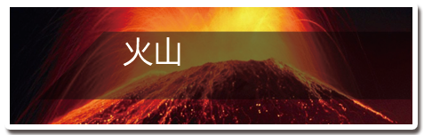

征兆：
火山在喷发之前常常活动增加，伴有隆隆声和蒸气与气体的溢出，硫磺味从当地河流中就可闻到。
刺激性的酸雨、很大的隆隆声或从火山上冒出的缕绿蒸气是警告的信号。
逃生：
1. 使用任何可用的交通工具。火山灰越积越厚，车轮陷住就无法行驶，这时就要放弃汽车。迅速向大路奔跑，离开灾区。
2.倘若熔岩流逼近，应立即爬上高地。切记保护头部，以免遭飞坠的石块击伤。最好戴上硬帽或头盔，任何帽子塞上报纸团戴在头上，也有保护作用。
3.利用随手拿到的任何东西，即时造一副防毒面具，以湿手帕或湿围巾掩住口鼻，可以过滤尘埃和毒气。
4.戴上护目镜，例如潜水面罩、眼罩，以保护眼睛。
5.穿上厚重的衣服，保护身体。
6.某些火山地区设有紧急庇护站。即使附近没有紧急庇护站，也不可在其他建筑物内躲避，只有熔岩块涌到跟前，则属例外。墙壁虽然可挡住横飞的岩屑，屋顶却很容易咂塌。
7.驾车逃离时要记住，火山灰可使路面打滑。不要走峡谷路线，它可能会变成火山泥流经过的道路。
8.火山喷发时会有气体和灰球体以超过每小时160公里的速度滚下火山。可躲避在附近坚实的地下建筑物中，如果附近没有坚实的地下建筑物，惟一的存活机会可能就是跳入水中；屏住呼吸半分钟左右，球状物就会滚过去。